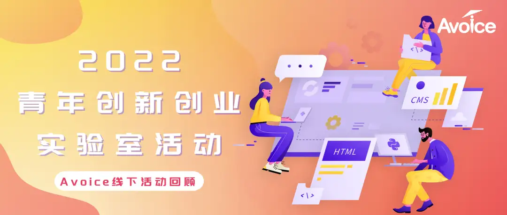
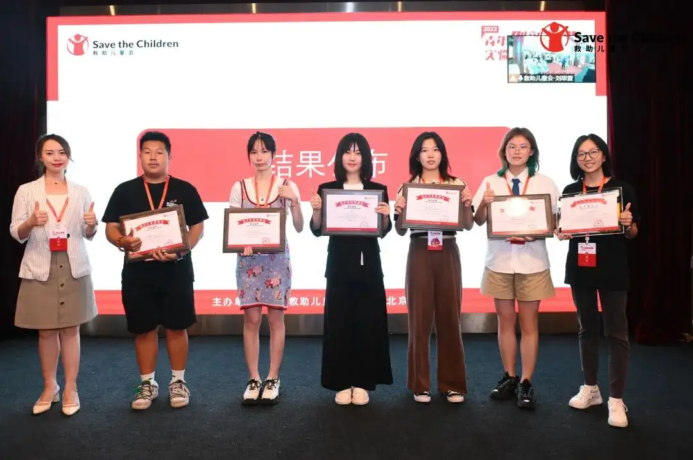
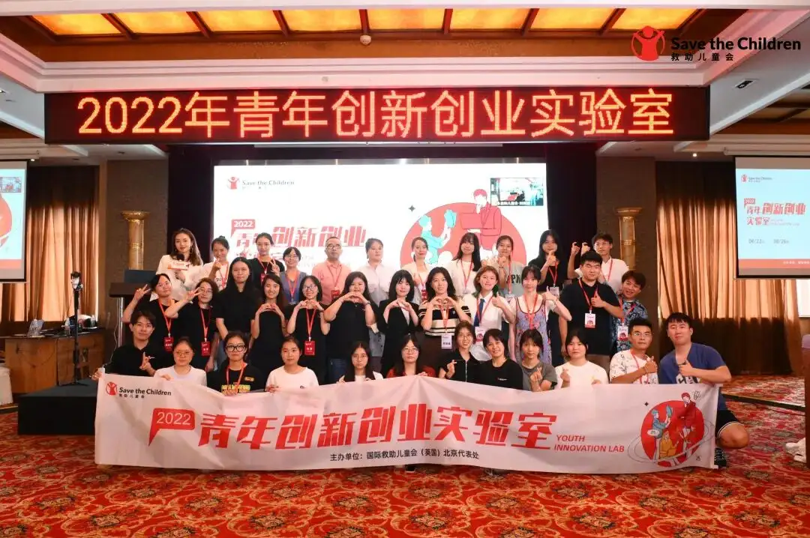
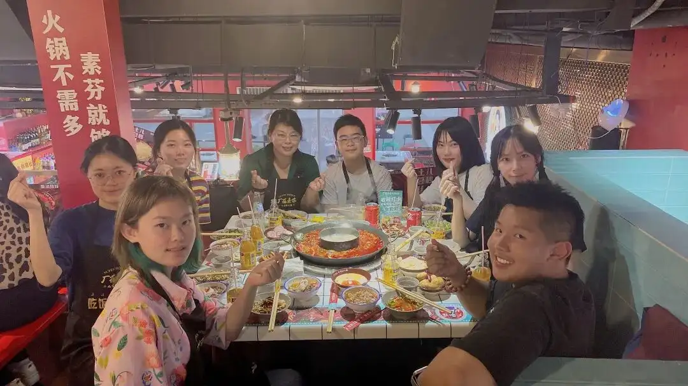
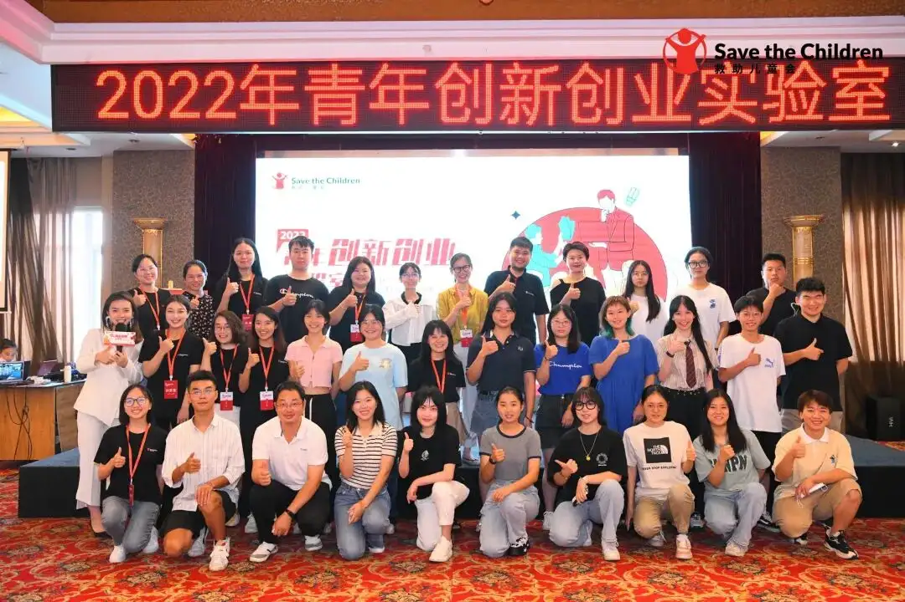
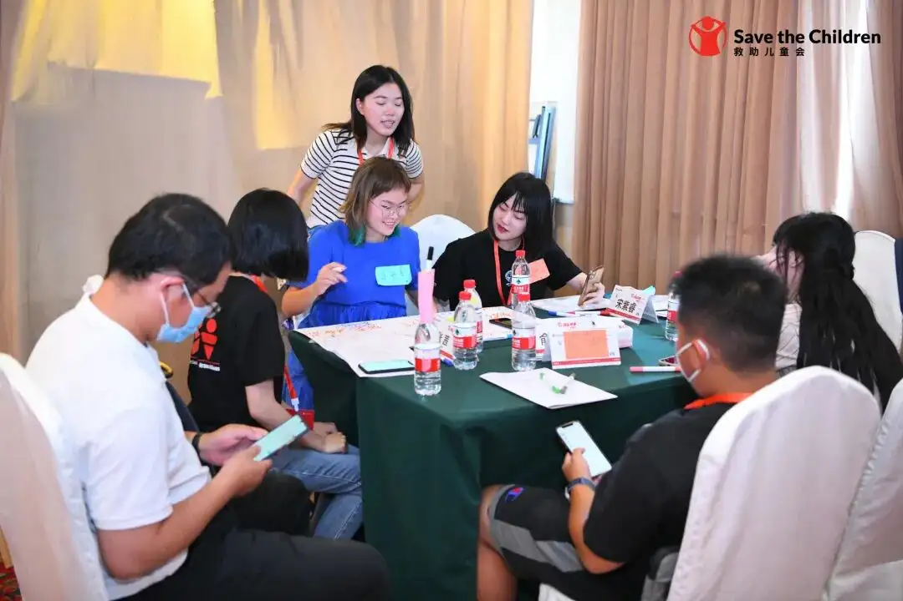
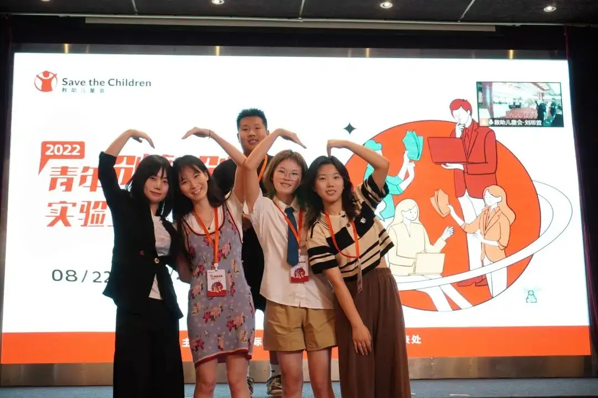
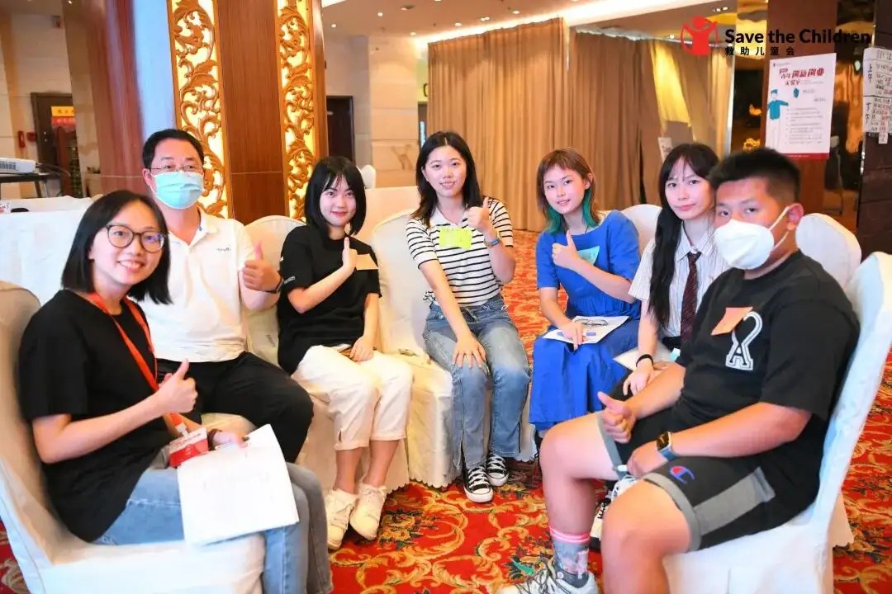

引言：
Save the Children 国际救助儿童会（英国）北京代表处于2022年8月22日至8月26日，在成都线下开展了为期5天的“青年创新创业实验室活动”。
“青年创新创业实验室”致力于为以商业手段促进社会发展的青年提供一个可持续性的、参与式的成长平台，以提升青年的绿色意识，帮助青年更好地从学校进入社会，在未来的绿色工作中取得成功，带来持久和启发性的改变。
向下滑动查看
Avoice的五位成员以团队的形式报名，深度参与青年创新创业实验室线下工作坊。在嘉宾分享中，Avoice小组深入了解了联合国可持续发展目标，建立了对创新、创业和绿色经济的认识和了解，学习创业过程中不可或缺的专业知识。经过“确定要解决的社会问题”、“选择创意解决问题”、“产品/服务雏形制作”、“测试和调整”、“创意推介”五个创变过程，在救助儿童会活动协作者和Avoice顾问、成员的支持下，Avoice小组探索市场中真实的需求和痛点，设计商业解决方案来更好地服务目标群体。
Avoice小组放眼于海外华人，探究他们在就业中的痛点和原因，促进他们实现体面就业。此外，Avoice小组尤其关注遭受家暴、性别暴力伤害的女性，为她们提供持续的就业支持，使她们在摆脱暴力伤害的同时，能够获得经济上的独立和保障。
活动最后，青年创新创业实验室进行创意路演，并邀请相关专业嘉宾进行评选。Avoice小组以充满关怀的理念、富有创意的计划、制作精良的网站、考虑周全的服务和自信大方的展示赢得了嘉宾和其他小组的称赞，获得了创意推介竞赛一等奖。

通过本次活动，Avoice的成员们在观点与观点的碰撞中成长，在合作与交流中收获友谊，在日常的相处中学习对方身上的闪光点，也挖掘自己的独特之处，更重要的是，这次活动坚定了Avoice成员们共同的信念——创造安全、平等的生存和发展环境，共建爱与平等的女性家园。

线下团队感想
Yimar
Avoice项目发起人
很高兴能有这样的机会，让我和Avoice的几位小伙伴一起来到成都参加青年创新创业实验室的线下培训和商赛。
平时Avoice的工作大部分是在线上进行，这次非常难得，我们可以有这么多天的时间面对面见到彼此并深度交流。
咱们Avoice的小伙伴们真的优秀又靠谱，和大家一起工作、一起并肩作战是很愉快的事情～
在此期间，我们还和Avoice中国区的理事之一、成都市残疾人福利基金会秘书长晓姌姐面基，一起吃了成都火锅 (*≧▽≦)
在这次活动中，针对主办方救助儿童会要求，我们主要围绕联合国可持续发展目标 SDG 8 “经济增长与保障就业”，设计了一个其实背后的公益目标为解决海外困境华人女性就业问题的商业方案。
为什么想做这个事情呢？其实在Avoice救助过的200多个家暴个案中，一些遭受家暴伤害的女性同时还存在经济和就业困难的问题，但只是通过公益手段很难特别有效得帮助她们解决这个问题，这让我们产生了一些无力感，所以我就想着当某一天有了合适的机会，我会希望去用商业的、可持续的力量推动这个社会问题的改善和解决。
恰逢这次的机会，我们团队经过一周的调研和策划完成了一个相关的商业方案。在最后一天的赛事中，我们的方案和路演有幸得到了5位评委的认可，荣获第一！
感谢救助儿童会老师们的周到安排和耐心指导，感谢各位评委老师们的认可支持和衷心建议，也很高兴在美丽的成都结识了这么多优秀可爱的新朋友。
我不会忘记在美好的青春年华里，在美丽的天府之国成都，这段与大家一起学习成长、一起快乐品尝美食、一起熬夜做方案、一起为理想发光发热的美好时光！

郭若男
Avoice
对接管理处成员
在国际组织救助儿童会Save the Childre所举办的青年创新创业实验室五天的时间里，我听到了很多故事，见到了很多人，大家的遇见，能够让我们彼此之间，感受到更多的美好。也做到了很多让我最开始都完全意想不到的事情。Yimar，小易，宋宋和三金他们身上每一个人所具备的才华、能力和见地都让我惊叹，跟他们在聊天的过程中我都能“见世面”，这是让我觉得很了不起的。还要感谢协作者茜姐，在我状态不佳的时候，有单独和我谈谈心，了解我的想法，切实的体会到救助儿童会的人文关怀了（笑）。
在团队我负责的大头是网站模拟并为此“崩溃”了两天，我自己都没想到我一个文科生，居然还能干网页设计这种技术活。我将最后的成果称之为“我的儿子”，大家问了我一个很Avioce的问题：“为什么是儿子不是女儿？”，我果断回答：“因为女儿不会让我这么操心！（不是）”
想分享一些有趣的事：
我每天的必修课之一就是问小易“晚上吃什么”，于是小易就尽心尽责地带我们去找好吃的，其中一天她有事需要回家，而她在回家之前还先叮嘱好我们晚上去吃什么；还有一个每日任务就是和宋宋贴贴，宋宋每次都会和我蹭蹭脑袋说“贴贴”；还有就是和Yimar凑在一起讲八卦傻呵呵地笑；跟三金聊了各自的一些经历引发不少共鸣......在最后一夜，成都下起了雨，久旱迎甘霖。我们凌晨两点下楼做核酸，在大街上穿拖鞋疯跑着一边躲雨一边哈哈大笑。
离开成都后，我坐在北上的列车里想，这五天所带给我的究竟是什么？我想意义就在于我们坐在一起在串串店里聊天南地北，晚上一块熬到凌晨五点做方案，都学会了三金的口头禅“抽象”，在这样短暂而细碎的时光里，我们保持着分享、学习和快乐的能力，这样的我们因相同而有所联结，因相异而有所成长。

宋紫睿
Avoice
社群管理处成员
一直觉得“缘分”很奇妙，因为共同的信念，我们加入Avoice；因为救助儿童会主办的活动，我们从不同的地方而来，相聚成都；因为恰好分到第三小组，我们遇见张茜姐姐和海强老师，度过难忘的五天；还有其他的工作人员和小伙伴，这次活动中的每一个人都真诚、美好、温暖、可爱。
我想我不会忘记一些细碎的点滴，它们构成了我这五天的美好回忆。
写着第三小组组名和所有人名字的大纸，上面有我们的共同特征和独特特质。在它身上，我看到了独一无二闪闪发光的个体，也看到了把我们联结起来的纽带。
用不同颜色的乐高积木搭建起来的城堡，我一直觉得它是我们合作的隐喻。我们来自不同的地方，学习不同的专业，有着不同的经历、兴趣与特长，我们的不同就像是形状、颜色和功能各异的乐高积木，它们相互补充或相得益彰，在实现我们共同的创意的时候，我们运用我们每个人拥有的这些积木去配合别人，最终完成我们的作品。
因为太丰盛每次都吃不完的午餐，热辣滚烫的火锅、串串，严太婆凉粉锅盔，文殊院素斋的素菜，路边摊售卖的手搓冰粉，半夜点的茶百道外卖......一道道美食不仅俘获味蕾，也记录了我们相处的时光。我们是怎么熟悉起来的呢？我想，就是在一起分一包饼干的时候，在询问“晚上吃什么？”的时候，在聊起自己听过的八卦的时候，在讲述各自的选择和未来的打算的时候，在熬大夜一起为一件事努力的时候渐渐熟悉的吧。
一直记得黄永玉的一句话“任何一种环境或一个人，初次见面就感到离别的隐痛时，你必定是爱上他了。”活动结束的时候心情复杂，一方面是得到一等奖的喜悦，另一方面是大家要分别的难过。五天就像梦一样唰唰地过去了，像这样能认识不同背景的朋友，平等开放包容地和大家交流，和有共同信念的靠谱团队合作，运用自己的才能和创意把一些想法逐渐落实的机会又有多少呢？很珍惜和大家相处的每一个时刻，真挚地希望我们还能见面，给每一个朋友大拥抱，爱大家

杨鑫
Avoice宣传处成员
在国际组织救助儿童会Save the Children所举办的青年创新创业实验室五天的时间里，从江浙小镇转到川地，天气却依旧炎热。因为身上当时有五六个中高风险旅居史，然后我开始流鼻涕咳嗽，当时还以为自己要🐑了。但大家都很包容我，救助儿童会工作人员也一直在帮我想办法，Avoice的成员们也跟我线上联动，也有在关注我的状态，真的爱大家！
这几天其实收获还是蛮大的，虽说自诩作为纪录片工作者有多次田野的经历，但这次的生命体验跟以往单枪匹马的考察不同，这次团队协作真的让我心动。大家各司其职然后一起熬夜，我虽然口上说的“好讨厌商赛以后再也不参加了”，但其实还是很期待跟大家一起继续思考新的方案和idea。
后面大家分开了，我也被困在川西的小城，更多时刻我在想着究竟是经历让人成长还是年岁，忽然想起前段时间读了梅琳达 •盖茨的《女性的时刻》，书中的一句话我很喜欢“支持女权主义、就是相信女性有权发出的自己的声音、挖掘自己的潜能、相信男性与女性应该共同努力、消除那些至今仍阻碍着女性发展的障碍与偏见！”感谢Avoice和救助儿童会能让我有机会去体会和创造一些全新时刻。

易靓晶
Avoice
对接管理处成员
炒鸡酷的体验 ！有太多太多令我难忘和感动的瞬间，有人表达，有人倾听，大家尊重每一个个体的自我选择；真诚用心地听别人的分享。大家在努力创造一个自由，包容，信任，温暖，努力打破偏见的环境。所以认识了很多可爱的人 ，大家来自天南海北，同样也包容天南海北。每天结束之后都会和Yimar，紫睿和男男一起探索成都美食，每天都是火锅串串冰粉，成功让大家都爱上四川美食🤪最后一天深夜我们继续狂赶方案到了五点过，最终咱们一起努力拿到了第一名嘿嘿。
另外，在这个活动中，真的处处有感受到救助儿童会的认真和用心，每天吃得好好，零压床睡得好香🤤各位协作者都好亲切，感觉每一个想法都可以说出来，每个人的表达都被尊重，每一个建议都能被分享。创意仓库里的乐高简直是我的放松玩具，爱上了拼乐高！虽然还不太会拼，不过也算发现自己新爱好了，成功下单乐高。为期不长的五天里，我们一起制订规则，一起完善活动方案，一起共同创造，每天的展板都新奇又好看，大家把自己的想法都写上去感觉好充实！为期不长的五天里，大家都很忙碌，时间紧，任务重，但每天都很快乐，是扎扎实实做事情带来的那种纯粹的快乐。
在这次活动之后，我更愿意去打开自己了。生命是一种酩酊状态，我们有能力去渴求某些事物，创造一些东西，得到一些鼓励。趁年轻多去做一些让自己成长的事情吧！还记得在活动结束采访里面自己说的那句，很高兴和可爱的大家发生有趣的联结，未来我们一起出发吧~相信我们都是未来的大艺术家，能去尝试好多有趣的事，好多未知的可能性。希望在未来，我们都还可以保持着对世界的敏锐与热爱。世界，就是艺术，我们要在艺术身上安家。告诉世界，我们是大艺术家~

回顾部分撰写丨宋紫睿
排版、封面制作丨戴翰林